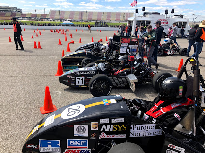

When I first joined the team as a freshamn in 2016, I was interested because I have always been interested in cars, and FSAE seemed like a cool project to get involved in, little did I know just how cool, and also how in-depth and intense of a project it would be. Formula SAE is an international design challenge in which students design, build, test, and race a formula-style racecar. The competition is extremely rigorous, with and emphasis on design quality rather than simply race performace. At each event, the most points are awarded during design judging, where volunteers from the automotive industry critique student's design decisisions on all aspects of the car, from powertrain to bodywork and aerodynamics If you want to learn more about SAE specifically, check out their website here
WPI has a long history of participating in SAE events, which had mostly died down until about 5 years ago, when it was revived by a few ambitious students who took the first car to competition in at least 10 years. Since then, we have improved each year, going from the bottom of the grid to scoring 36th among 120 international teams at FSAE Michigan 2019 (and number 2 from New England, full results). I have been on the team since my freshman year and have learned invaluable lessons from the experience. The challenge of building an entire car over the course of a school year, balancing WPI's rigorous academics with such an intense project, while still trying to enjoy the experience has taught me to manage my time and resources, and to stay on top of everything that is going on.
My place on the team has gradually transformed in to leading the composites team, as well as having a hand in making major design desicions and being one of the few mechanical engineers willing to touch electrical systems The primary use of composites on our car is for the bodywork, along with some other minor elements, such as a fan shroud for the radiator. Our general goal for the bodywork on the car is simplicity and drag-reduction, as we currently do not have the resources to properly develop an aerodynamics package, and would rather focus on the rest of the car before adding complexity and another potential problem. We achieve this by keeping a form-fitting body, with just enough structure for it to stay together and not break when we hit cones on the course. This year, we are interested in potentially exploring a slightly more structural body, with some elements potentially adding to the strutural rigidity of the frame.
This is a link to a photo album with pictures from last years build, they're mostly chronoligical, but don't do the process justice as we were more busy building than taking pictures, so most of the pictures happened at competition.